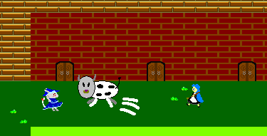

What's Silvia Herb

～シルビアハーブとは？～
～物語～
とある世界のツルハシ大陸の真ん中に、小さな村がありました。そこには、絶滅したと言われてきたケモケモ族という種族が住んでいました。
ある日、村の娘ファンデが、その弟の病を治すために、
シルビアハーブを探しに行く旅に出る！
～紹介～
シルビアハーブは、全方位アクションゲームです。
プレイ時間は、約１時間
本ゲームからセーブ機能を搭載しました。＊オートセーブの為、プレイ中に電源を落さないでください。
前作のメルヘンナイトの開発経験や皆様のフィードバックなど
様々な点の反省から創りだされた作品です。
完成度には自信があります。
プレイ時間は短いですが、映画を観る感じでプレイしていただけたら
嬉しいです。
～動作環境～
＃必須環境
OS:Windows *1CPU:1GHz以上 *2
メインメモリー:128MB以上
＃推奨環境 (開発環境)
OS:WindowsXPCPU:Pentium4 1.5GHz以上 Core・AtomCPU以降
メインメモリー:1GB以上
グラフィックカード:RADEON 9600PRO 、intel GMA内蔵グラフィック
サウンドカード *3 (開発環境では、Sound Blaster VX5.1)
*1 meで動いたので、おそらく９Xでも動きます。Vista,7でも動きました。64bit版も確認しました。
Windows Vista以降のOSでは、 Player右クリック>プロパティ>互換性>デスクコンポジションを無効にする>OKにすると、パフォーマンスが上がる可能性があります。
*2 あくまで目安ですが、最低でもOSの必要要件以上の環境が必要です。
開発ソフトの関係で、CPUによる性能で快適さが上下されるようです。
なので、高い性能のCPUでのプレイを推奨します。
性能が低いとステージ後半は、オブジェクト数が増えてうまく動作しない場合があります。
HTや、デュアルコアなどのCPUでやると処理が分割(？)されるみたいです。
(Pentium4・Core2DuoCPUで確認)
*3 サウンドカードやOSによってはうまく音楽が流れない場合があります。＃アンインストール
そのまま、ゴミ箱へ入れて削除してください。
＊シルビアハーブは、レジストリなどに変更を加えません。
本を閉じる(TOP)
ここのサイトのデータは、許可されたもの以外全て再転載禁止です。
©JANE PROJECT All rights reserved